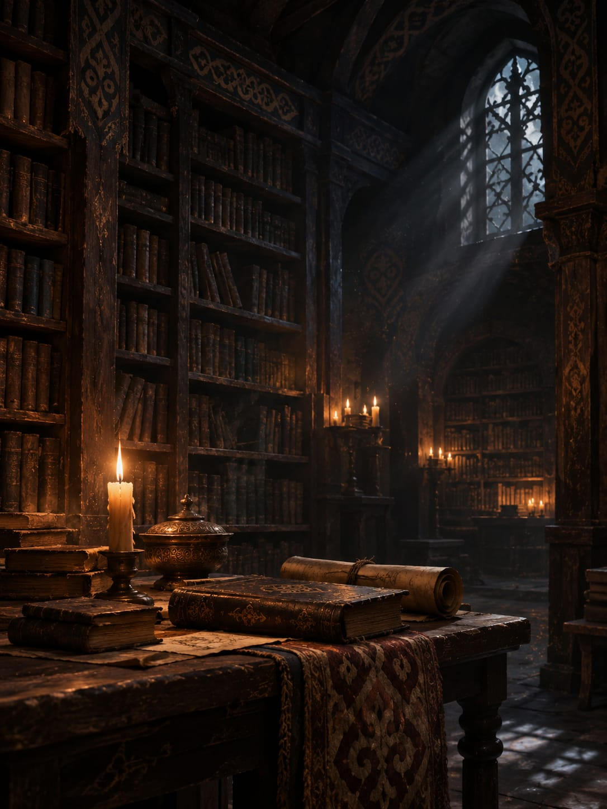

Жезтырнақ
Загадочное существо с металлическими когтями, встречающееся в народных преданиях.
КАЗАХСКИЙ ФОЛЬКЛОР
Древние истории, которые хранит бескрайняя степь.
Исследовать преданияНАСЛЕДИЕ ВЕЛИКОЙ СТЕПИ
Казахский фольклор хранит народные сказки, героические эпосы, легенды и поверья. В них встречаются мудрые герои, загадочные существа и удивительные события. Эти истории передавались из поколения в поколение.
БЕСТИАРИЙ
Загадочное существо с металлическими когтями, встречающееся в народных преданиях.
Могущественная и опасная старуха, известная по казахским волшебным сказкам.
Таинственный дух, образ которого встречается в казахских народных поверьях.
УСТНОЕ НАСЛЕДИЕ
История о смелом герое, волшебных помощниках и путешествии в подземный мир.
ЗАБЫТЫЕ ИСТОРИИ
Когда солнце скрывается за горизонтом, степь начинает рассказывать свои тайны...
Не каждый голос, услышанный ночью, принадлежит человеку.
В безлюдной степи иногда загорается свет там, где никто не живёт.
Говорят, ночью у старого колодца можно увидеть странную тень.
ТАЙНЫ ПРЕДКОВ
В степи существовали запреты, передававшиеся из поколения в поколение. За каждым из них скрывается своя история...
Нажмите, чтобы раскрыть тайну
В народе считалось, что свист в доме может отпугнуть достаток и благополучие.
Этот запрет также учил уважать спокойствие домашнего очага.
Нажмите, чтобы раскрыть тайну
Порог считался важной границей между домом и внешним миром.
Наступать или садиться на него было не принято из уважения к жилищу.
Нажмите, чтобы раскрыть тайну
В некоторых народных поверьях указывать пальцем на луну считалось неуважительным.
Луна занимала особое место в традиционных представлениях о природе и небесных светилах.
Нажмите, чтобы раскрыть тайну
С колыбелью — бесік — связано множество традиционных поверий.
Считалось нежелательным раскачивать пустую колыбель. Этот обычай отражал особое отношение к ребёнку и его защите.
Нажмите, чтобы раскрыть тайну
Огонь и домашний очаг традиционно связывались с жизнью и благополучием семьи.
Запрет выражал уважение к огню, который давал тепло и помогал людям выживать.
Нажмите, чтобы раскрыть тайну
Ночь в народных рассказах нередко связывали с неизвестностью и опасностью.
Подобные предостережения могли иметь и практический смысл: в темноте степь становилась опаснее для путника.
Народные поверья отражают традиции и представления прошлого, а не доказанные сверхъестественные явления.
ЗА ГРАНЬЮ СКАЗАНИЙ
Некоторые истории лучше оставить забытыми. Но если осмелитесь — откройте дверь...
✦ Нажмите на дверь, чтобы узнать свою судьбу ✦
ЗАПЕЧАТАННЫЕ ИСТОРИИ
Здесь хранятся истории, которые время пыталось стереть из памяти...
История, найденная среди старых рукописей.
Только разгадка откроет её страницы.

У каждого архива есть свой хранитель.
ПОСЛЕДНЕЕ ИСПЫТАНИЕ
Древние знания открываются не каждому. Ответьте на пять вопросов и узнайте, достойны ли вы стать хранителем преданий.
Вас ждут пять вопросов о тайнах Великой степи.
АРХИВ ВЕЛИКОЙ СТЕПИ
За прохождение испытания и познание древних преданий присваивается звание
ЗАБЫТЫЕ УГОЛКИ ВЕЛИКОЙ СТЕПИ
Шесть мест. Шесть загадочных историй. Выберите отметку и раскройте тайну.
✧ Каждое место хранит свою историю ✧
АРХИВ ТЁМНЫХ ПРЕДАНИЙ
✧ Легенды Великой степи ✧